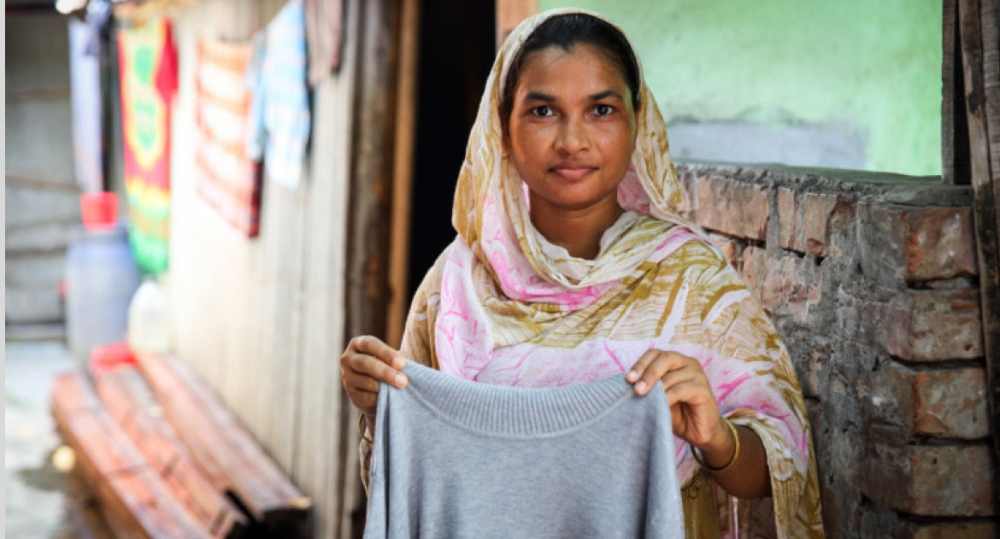

Factory fire in Dhaka, Bangladesh, in 2012. Many were trapped inside due to the main exit being locked. Image retrieved from CNN.

A Bangladeshi garment worker named Anju. You can read more about her story here! Image retrieved from Oxfam Australia.
Fast-fashion leads to water pollution through wasted fabrics and dyes. Additionally, microfibers used to make clothing also end up in the ocean.
Bangladeshi Female Workers
Women are the majority of the garment factory workforce. The garment industry pays them cents for their hard labor, which fuels the cycle of poverty, continuing to keep the women and their children in poverty. Women are also subjected to physical, sexual, and verbal abuse in garment factories. They get minimal breaks and their pay is reduced by the time they spend eating and using the bathroom.
Working Conditions
The factories in which the Bangladeshi women work in are unsanitary and crowded. The piping, walls, and fire alarms are rarely up to date and pass safety guidelines, which allows disasters to occur, like the Dhaka factory fire in 2012.
The Environment
Fast-fashion companies use synthetic fibers which take years to biodegrade (Maiti, 2020). Water leftover from dyes used on clothing ends up in the ocean, along with microplastics that are used to make clothing.
Fact Generator
Here are some interesting facts about fast-fashion and its effects on workers and the environment.